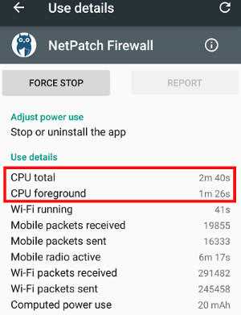

Questions
How much battery power does NetPatch Firewall consume?#
According to our tests, NetPatch Firewall is very efficient and consumes very little power.
Please note that, when NetPatch Firewall is on, Android counts all WIFI and Mobile network's consumption of your device as NetPatch Firewall's.
You can check the "CPU total" in Use details of NetPatch Firewall like below, this reflects the real power use of NetPatch Firewall.

The network consumes much power. By using NetPatch Firewall to control the network behavior of apps, You can save a lot of your network traffic and battery consumption.
How much memory does NetPatch Firewall use?#
It depends how much rules you use and apps you installed. NetPatch Firewall caches the rules, the icons of the intalled apps, the network infos to improve program efficiency. For most users, 20M-50M approximately.
Why was NetPatch Firewall disabled after a while?#
Please check if you have used a Task Manager, set it to do not kill NetPatch Firewall's process.
NetPatch Firewall need a background service to route network of your device.
How to set up a Shadowsocks proxy server?#
Check it out: https://shadowsocks.org/en/download/servers.html
If you enable Forward UDP through proxy or set DNS through proxy in NetPatch Firewall, you must enable udprelay mode in server.
NetPatch Firewall supports the following encryption methods: "salsa20", "chacha20", "chacha20-ietf", "rc4-md5".
How to delete Proxy, DNS, Group, Group item?#
LongClick.
Is NetPatch Firewall a AdBlock?#
No. NetPatch Firewall itself does not contain any rules, it has no built-in rules for blocking ads.
Using NetPatch Firewall, you have full control over your network, you need to create your own rules or subscribe from network to filter network.
Why does "block domain name" not work immediately sometimes?#
Some Apps cache DNS results for a period of time. If you have opened the App before blocking domain name you want, you can try to stop or kill the App then open it again.
How to add apps to Whitelist?#
Because android routing bugs on some devices, some apps using inbound connections maybe don't work properly with NetPatch Firewall.
In those cases, you can LongClick app name in "Apps Settings" to add those apps to Whitelist.
The apps added to Whitelist will not be filtered by NetPatch Firewall.
Dose Tethering works with NetPatch Firewall?#
I'm not very sure on all devices, if it doesn't works, you can set static ip address on the connecting device, it maybe works.
For USB Tethering, you can set ip 192.168.42.*
For Wi-Fi Tethering, you can set ip 192.168.43.*
Have other questions or suggestions?#
Twitter: https://twitter.com/netpatchco
Email: netpatch.co@gmail.com